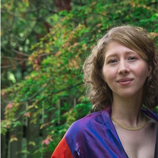

Lucianne Vazquez, MBA

For the past 13 years, I have dedicated myself to advancing my career often times using my bi-lingual skills in helping Spanish speaking employees and customers.
Most recently, I worked as a Human Resource (HR) Consultant. The HR Consultants team was the first point of contact for employees and managers to address any questions or concerns. In pevious roles, I earned experience working on projects in planning, requirements gathering, and testing. I also worked on reports, reconciliations, and data audits. Assisted HR Business Partners during investigations of employee complaints and disputes. Ensured appropriate documentation was recorded starting with the case intake and guided employees to applicable policies and the ethics hotline if needed.
In 2007 and 2008, I completed a bachelor’s in Human Resource Management, and a Master’s in Business Administration from Goldey Beacom College. For professional development, I completed certificates in Project Management and Business Analysis from the University of Delaware. And, a Legal Studies Certificate from Wilmington University was completed in October 2016. My current professional development is learning to code at the University of Pennsylvania where I am doing a Run-Buddy webpage seen in the work samples below.
As a hobby, I have been experimenting with extreme sports like skydiving, rock climbing and snowboarding are some that I have done. Most recent, I have also taken a passion in renovating homes during my own home renovation. This has led me to work on 3 other home renovations currently in progress.